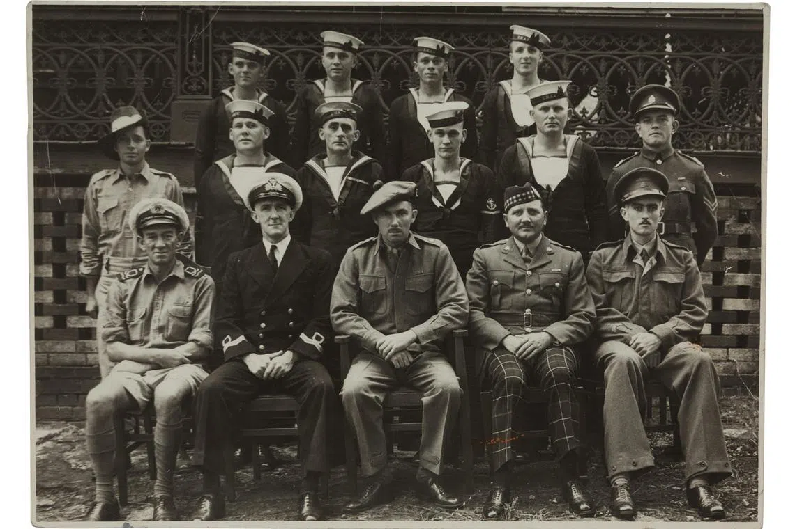
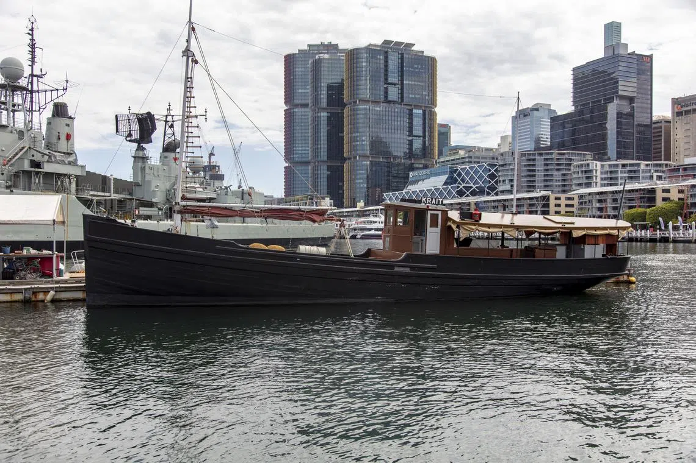
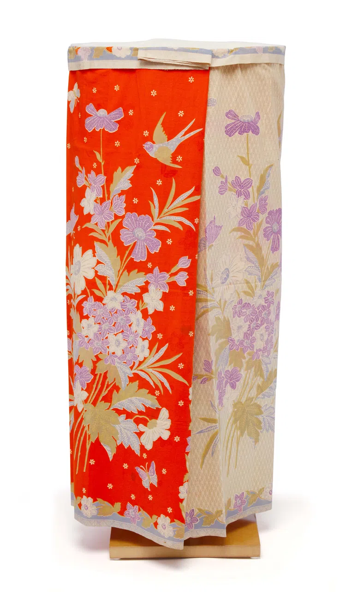
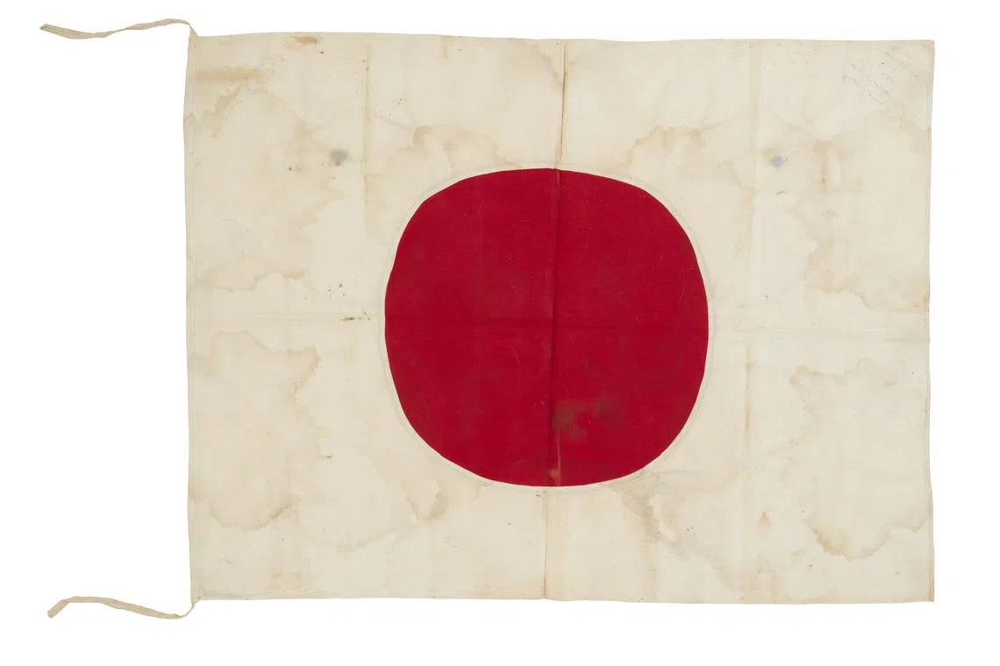

Double Tenth Massacre 10 Oct 1943
57 inmates at Changi Prison were tortured and forced to bear the consequences of an Allied attack on Japanese naval ships they had never carried out.
Changi inmates paid the price for a mission they never knew existed. People were dragged in for questioning, and many never emerged back out.
In the early mornings of 10/10/1943, also the anniversary of the founding of the Republic of China, internees at Changi Gaol were forcefully assembled at the courtyard while cells were thoroughly searched.
Behind this sudden crackdown was Operation Jaywick. On 27 September 1943, a joint Australian-British commando force attacked seven Japanese shipping vessels in Singapore waters.
Led by Captain Ivan Lyon, on 2 September 1943, a group of 14 Allied soldiers captured a Japanese fishing vessel, the Kofuku Maru, which the Australians later renamed into Krait, to sail all the way from the shores of Exmouth in Western Australia to Singapore.


To deceive the Japanese, the Australians disguised themselves as Malay fishermen using sarongs and dark brown cream as make up.

Upon arriving at Pulau Ranjang in the Riau Islands, in three canoes, six soldiers stealthily paddled towards a few Japanese vessels. Unfortunately, they failed on their first attempt due to the turbulent waters.
On 26 September, they slipped close to seven of the Japanese ships, fixed time-delay limpet mines, and paddled back to the southern islands to reunite with the rest of the team.
Thereafter, they concluded their short trip and began sailing home to Australia, eventually reaching back on 19 October. And soon enough, on the next day, their mission concluded successful. Seven explosions were heard, and the ships suffered extensive damage.
“At 5.15 a.m. on the morning of September 27, 1943 a terrific explosion shook the harbour of Singapore and a big Japanese tanker went up in flames.”
The perpetrators managed to escape before the Japanese could identify them, nonetheless, they were determined to get to the bottom of it and punish those responsible.
The Kempeitai had an inkling that the internees at Changi Prison were responsible, as the Johor Branch of the Kempeitai claimed that the foreign internees in Changi Gaol (prison) had transmitted news to the attackers.
They were reluctant to believe the Allied forces from Australia and Britain were behind the explosions as they had undermined the Allies’ abilities to carry out such substantial attacks with its geographical distances, thus pushing the blame onto local civilians.

As such, the Double Tenth incident was launched, to sieve out those suspected of sabotage. A total of 57 prisoners were arrested and interrogated on suspicion of assisting the operation.
Those arrested include war hero, Elizabeth Choy and husband. Walter Stevenson was arrested on the spot after a wireless set was found in his possession.
That same day, 19 men in total were taken in, among them were barrister Robert Heeley Scott, a prominent Foreign Office employee suspected of leading the anti-Japanese resistance, and John Long, the camp's ambulance driver, who was later executed.
By 2 April 1944, the number of arrests had grown to 57, with many civilians from the city itself detained at the YMCA, the Central Police Station on South Bridge Road, or a Smith Street residence converted into a makeshift jail.
Over the subsequent seven torturous months, the suspects were held in cramped conditions and subjected to relentless interrogation and torture.
Scott was tortured by Officer Monai Tadamori, who interrogated him for a whole month. Yet all Scott ever admitted to was harbouring anti-Japanese sentiment, and revealing nothing about Operation Jaywick.
He was ultimately charged over his anti-Japanese propaganda and his involvement with the wireless set at Changi, and sentenced to six years in Outram Road Gaol.
Although the Allies had learnt that the Japanese had suspected the civilians as the masterminds behind Operation Jaywick, they chose to keep mum.
Theories suggest that the reason behind this was their reluctance in revealing to the Japanese that their geographical locations did not deter their capabilities to attack.
During the Double Tenth post-war trial after the Japanese’s eventual defeat three years later, on 18 March 1946, 21 Japanese soldiers and interpreters were put on trial for the torture and murder of civilians.
This incident remains remembered as the Double Tenth Massacre, as fifteen of the 57 died from torture.